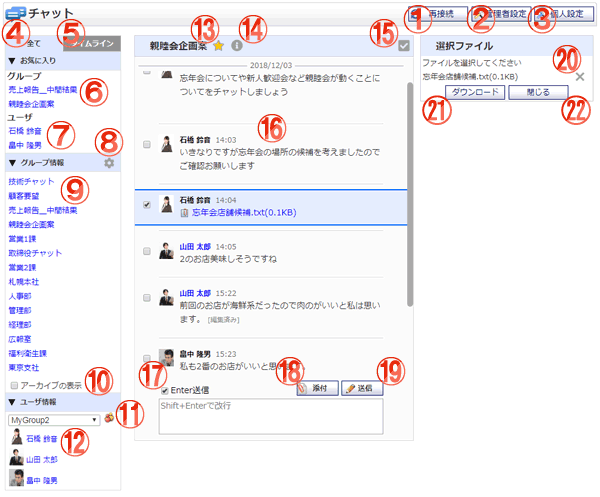

メッセージの送受信と、チャットグループの作成・編集・削除を行うことができます。

機能説明
再接続ボタンチャットの再接続を行います。 |
管理者設定ボタン管理者設定メニュー画面へ遷移します。管理者グループに所属していないユーザの場合、ボタンは表示されません。 |
|---|---|
個人設定ボタン個人設定メニュー画面へ遷移します。 |
全てタブお気に入りチャット、チャットグループ、ユーザ間チャットを表示します。 |
タイムラインタブチャットの履歴を一覧で表示します。 |
お気に入りチャットグループお気に入り設定したチャットグループ一覧を表示します。 |
お気に入りユーザ間チャットお気に入り設定したユーザ一覧を表示します。 |
グループ管理アイコンチャットグループの登録、編集、削除を行います。チャットグループの作成が制限されている、かつチャットグループの編集権限を一つももっていない場合、アイコンは表示されません。 |
チャットグループ所属しているチャットグループ一覧を表示します。 |
アーカイブの表示アーカイブ状態のチャットグループを表示/非表示します。 |
グループボタングループ選択画面を開きます。 グループ選択画面でグループをクリックすると、 クリックしたグループが選択グループに表示されます。 |
ユーザ間チャットユーザ一覧を表示します。 |
お気に入りアイコンチャットグループ、ユーザ間チャットをお気に入りに登録、削除します。 |
インフォメーションアイコンチャットグループの場合はグループ情報、ユーザ間チャットの場合はユーザ情報を表示します。 |
チェックアイコン一括ダウンロード画面を表示/非表示します。 |
チャットエリア選択中のチャットグループ/ユーザ間チャットを表示します。 |
Enter送信入力したメッセージをEnterキーにより送信するか、Shift+Enterキーにより送信するかを設定します。 |
添付ボタン添付ファイル選択画面をポップアップで表示します。ファイルを選択し、確定すると添付のリストに選択したファイルが送信されます。 |
送信ボタン入力したメッセージを送信します。 |
バツアイコン一括ダウンロードから添付ファイルを外します。 |
ダウンロードボタン選択した添付ファイルを一括でダウンロードします。 |
閉じる一括ダウンロード画面を閉じます。 |
表示・入力項目説明
メッセージ
メッセージを入力します。３０００文字以上のメッセージを入力して送信すると、３０００字毎にメッセージが分割されて送信されます。